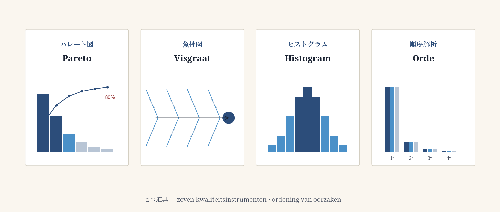
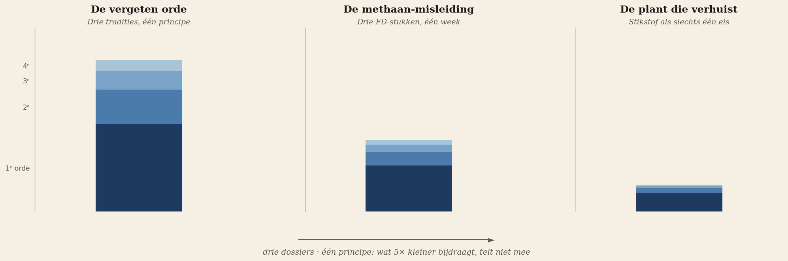
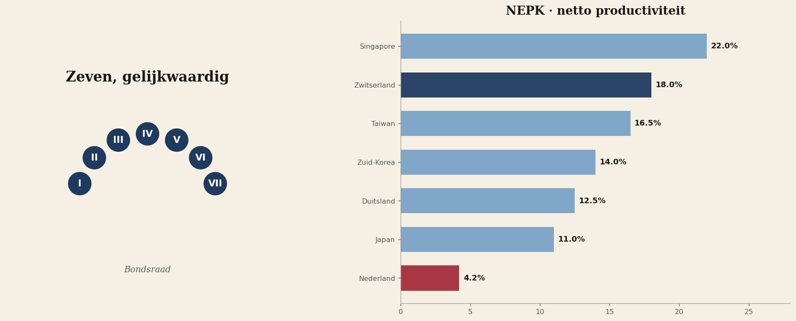
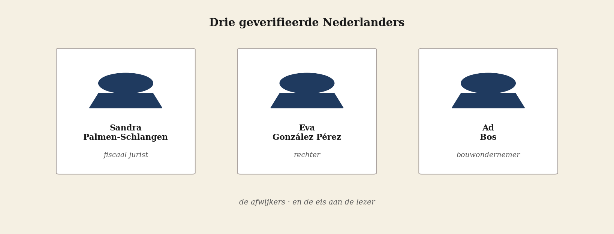

Deze editie heeft een ritme. Vier delen die op elkaar voortbouwen. Lees ze in volgorde — of pak het deel dat u trekt. Elk artikel staat op zichzelf.
Het gereedschap
De basis — wat is rangorde, waar komt zij vandaan, wat heeft zij in geld opgeleverd voor wie haar gebruikte.

Brief aan de lezer
Editie 5 levert geen mening af, maar een instrument.
七つ道具 — De zeven die het verschil maakten
Kaoru Ishikawa's zeven kwaliteitsinstrumenten, plus orde-analyse uit de staalbouw. Het gereedschap waarmee Japan ons inhaalde.
De succesformule die wij verleerd hebben
Japan, Korea en China zijn ons ingehaald omdat ze het instrument omarmden dat wij hebben weggegooid.
De diagnose
Het principe en twee dossiers — methaan en stikstof — waarin de Nederlandse pers en het bestuur de zwaarte verkeerd om plaatsen.

De vergeten orde
Drie tradities, één principe: wat 5× kleiner bijdraagt dan de hoofdfactor, telt niet mee.
De methaan-misleiding
Drie FD-stukken in één week, drie omkeringen van zwaarte, vier eisen aan de pers.
De plant die verhuist
Stikstof, droogte, klimaatverschuiving, fragmentatie — en het beleid dat slechts één van de vier ziet.
Het ontwerp-antwoord
Wat een land heeft dat het ontwerp wel goed deed: Zwitserland sinds 1848, met de productiviteitscijfers van eenentwintig landen.

De mensen en de opdracht
Drie geverifieerde Nederlanders die in een orde-omgekeerde wereld het kompas behielden — en wat u zelf kunt doen met dit instrument.
